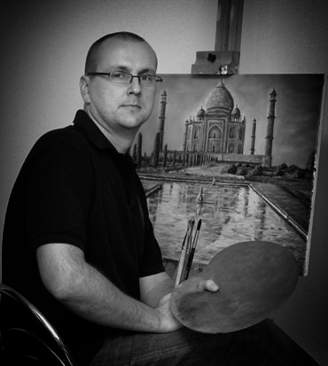
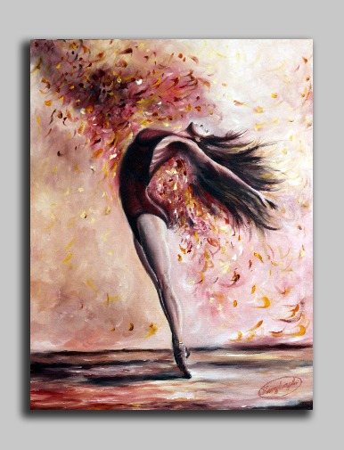
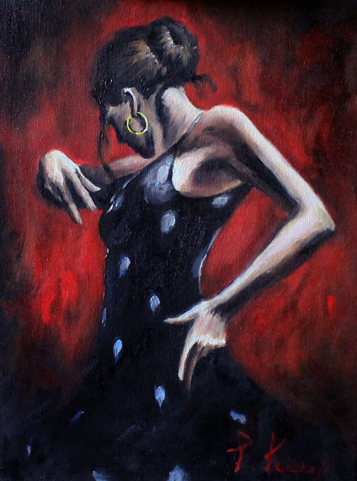

O mnie

Mam na imię Piotrek i pochodzę z Białegostoku, wspaniałego miasta znajdującego się na północnym wschodzie Polski. Mam cudowną żonę i dwóch synów w wieku 15 i 6 lat.
Pracuję w firmie zajmującej się produkcją form wtryskowych, przy obsłudze
maszyn CNC a dokładniej EDM (czyli obróbka metalu metodą elektroerozyjną) W sumie praca jest dość ciekawa, ale po 17 latach stała się trochę nudna, stąd pomysł na ten kurs i niewielka nadzieja że coś się może zmieni w życiu. Pamiętem że
swoją przygodę z programowaniem zacząłem jeszcze na pierwszych komuterach typu Atari w jezyku Basic. Ale przygoda ta się szybko skończyła.
Interesuje mnie wiele dziedzin od elektroniki przez modelarstwo po gotowanie. Być może za dużo
rzeczy chcę naraz ale wydaje mi się że wiedza to największy kapitał. Jak mawiał pewnien przywódca z Indi "Żyj tak jakbyś miał umrzeć jutro, ucz się tak jakbyś miał życ wiecznie". Uwielbiam stare dobre kino, poniższa tabela przedstawia
dziesięć moich ulubionych filmów.
Ranking ulubionych filmów
| Miejsce | Tytuł | Rok produkcji |
|---|---|---|
| 1 | Godfather | 1972 |
| 2 | Sleepers | 1996 |
| 3 | Casyno | 1995 |
| 4 | Goodfellas | 1990 |
| 5 | Braveheart | 1995 |
| 6 | Heat | 1995 |
| 7 | Once Upon a Time in America | 1984 |
| 8 | The Deer Hunter | 1978 |
| 9 | Forrest Gump | 1994 |
| 10 | Scarface | 1983 |
Pasja
Moją największą pasją jest malarstow olejne akrylowe i rysunek.Od młodzieńczych lat próbowałem coś rysować i malować, ale na poważnie zająłem się tym jakieś 10 lat temu. Odkąd pamiętam to najwiekszą radość sprawiało mi przyglądanie się jak
na czystej kartce lub płótnie wyłania się wizerunek jakiejś twarzy dlatego skupiłem się na portretach. Krótka demonstracja w linku.Filmik jak powstaje obraz
Poniżej
kilka moich obrazów.
 